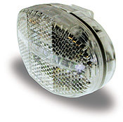
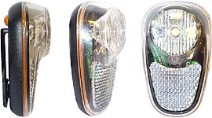

|  |  |
| Cateye LD500 | Knightlite Koncorde |
More bike and light articlesA couple of years ago I bought a Cateye HL/LD500 White LED Lamp and a Knightlite Koncorde, a white LED version of their excellent BS approved LED rear light. This article compares these two lights.
Recently I have also bought a Cateye HL-EL100, a three-LED light that is shaped very much like Cateye's popular Micro Halogen front light. The latter light is in an altogether different category than the two smaller lights pictured above, as it it more of an alternative to a proper front light. As such is reviewed in my Low-Power Lights Review article with other proper front lights.
Indoor tests of the Cateye HL/LD500 and the Knightlite Koncorde showed:
- the white LED lights were quite a bit dimmer than some benchmark rear LED lights, like the VistaLite Super Nebula (5 LED light) and the Knightlite/Halfords BS approved rear light.
- they are much brighter than previous front LED lights made from green, yellow, or orange LEDs
- the Knightlite seemed brighter than the Cateye from some angles, from the other angles the Cateye and Knightlite were the same brightness
One night, I stuck them on bikes and had my boyfriend ride around the block while I watched from our drive. Test results are as follows:
- the white LED lights seemed to be satisfactory as a "be seen" light
- they not as effective (not as bright) as even relatively cheap incandescent lights, like the Cat Eye HL500, which cost 15 quid or less, on the other hand their bluish tinged light is unusual enough that it may help attract attention
- as in the indoor tests, the Cateye and Knightlite were about the same brightness, except at a few angles where the Knightlite is brighter
My conclusion regarding brightness is that they are superb as backups to dynamo lights that don't have standlights, and can be useful as a light to keep attached to your bike at all times, to be turned on when you have an unplanned ride in the dark.
Since they aren't as bright as plain incandescent lights like the Cat Eye HL500, they shouldn't be bought as your only front light to be used at all times. However, if you do this, it's better than nothing, as long as you keep fresh batteries in them to keep them as bright as they can be.
Longer term use of both lights showed that the Cateye light lasted much longer on a set of batteries than the Knightlite, despite the fact that the Cateye has three LEDs while the Knightlite has only one.
The Knightlite seems a better deal than the Cateye, since it's 13 quid (mail order from St John St Cycles) and includes batteries, while the Cateye is 18 quid or more, and doesn't include batteries, and the Knightlite is as bright or brighter from all angles. However the Knightlite goes through batteries faster, so although it costs more, the Cateye may prove less expensive to use in the long run. In addition the longer run time means that you're less likely to be caught without a light when you need it.
Durability. After discovering that the Cateye light has a longer runtime than the Knightlite, I used that alone on my commuter bike as a backup for my dynamo light. That is, until one time while changing the batteries, it stopped working. I'm not sure what happened to it: I didn't abuse it or (as far as I know) put the batteries in the wrong way around, but for whatever reason it doesn't work any more. Funny, the same thing happened with one of the Cateye red LED rear lights. I'm not saying that these Cateye lights are bad, simply that I've broken two of them simply in changing the batteries. I'm sure others have gotten years & years of service out of them.
I also have some doubts about the durability of the Knightlites. I have several of the red rear ones, and most of them have developed cracks in the edges of the lenses. None has broken yet, so I don't know if this is a serious problem... And after several years of use, they still work, and the white front LED light still works as well, although I hven't used it recently.